Music Go Bang
GENRES
- Rock
- Pop rock
- Punk
- Power pop
- PUB Rock
- Rock & roll
- Glam
- Hardcore
- Post punk
- Death punk
- Thrash metal
- Grindcore
- Crust punk
- Goth rock
- Ska
- Rocksteady
- Garage rock
Back
-

Viva Los Pendejos
Third album of the NYHC band Includes the sessions "Keep The Faith" and "Return 2 Burn" Live bonus tracks included on CD version
More informationANTIDOTE N.Y.C.
-

“Pleasure Victim” LP (Mercury, 1982)
Second album of the new wave band internationally known for its success
More informationBERLIN
-

“Overdosed On” LP (Vinyl Solution, 1990)
Compilation that includes all the singles released by the Californian band on their own label, 2” Pecker Records. Cover by Ray Ahn of Hard-Ons.
More informationCHEMICAL PEOPLE
-

The only album by this interesting group from Florida, where they mix Pop, Punk, New Wave and Surf.
More informationCHICHLIDS
-

Debut album where they make a brilliant criticism of the hypocrisy of the rock stars who organized benefit concerts against hunger in the third world while supporting the multinationals that caused it.
More informationCHUMBAWAMBA
-

“Choir Invisible” LP (Frontier Records, 1991)
Debut of this post-punk band that emerged from the ashes of The Flyboys
More informationCHOIR INVISIBLE
-
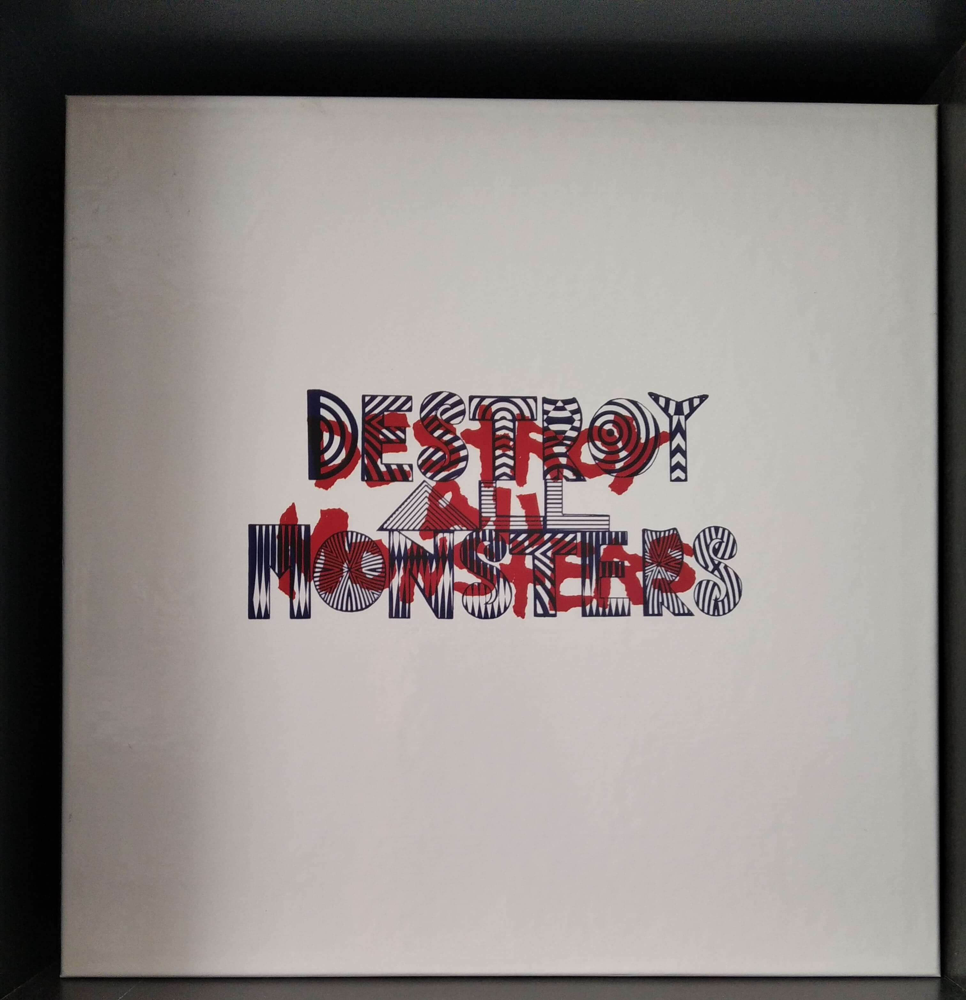
“Hot Box 1974-1994” 3LP (Munster Records, 2014)
It includes an Lp with the singles, a live Lp and another with experimental material. With Niagara, Michael Davis (MC5) and Ron Asheton (The Stooges).
More informationDESTROY ALL MONSTERS
-
“Geno” LP (EMI, 1983)
Compilation of some of their first singles (1978 to 1981) of this great well-known band especially for his success "Come On Eileen".
More informationDEXYS MIDNIGHT RUNNERS
-
“Bloodbrothers” LP (Asylum Records, 1978)
Third album by the kings of punk from NY, after which they took a break for a few years, although fortunately they returned. DFFD.
More informationDICTATORS
-

“Wolfpack” LP (Reflex Records, 2002)
Reissue of “Brotherhood”, the first album by the HC Straight Edge band from Boston, fronted by Dave Smalley. Originally released in 1983, bonus tracks have been added.
More informationDYS
-

“Life On The Line” LP (Island Records, 1977)
Second album of the band led by Barrie Masters, with classics like “Do Anything You Wanna Do”, “Quit This Town” or “Ignore Them”.
More informationEDDIE AND THE HOT RODS
-
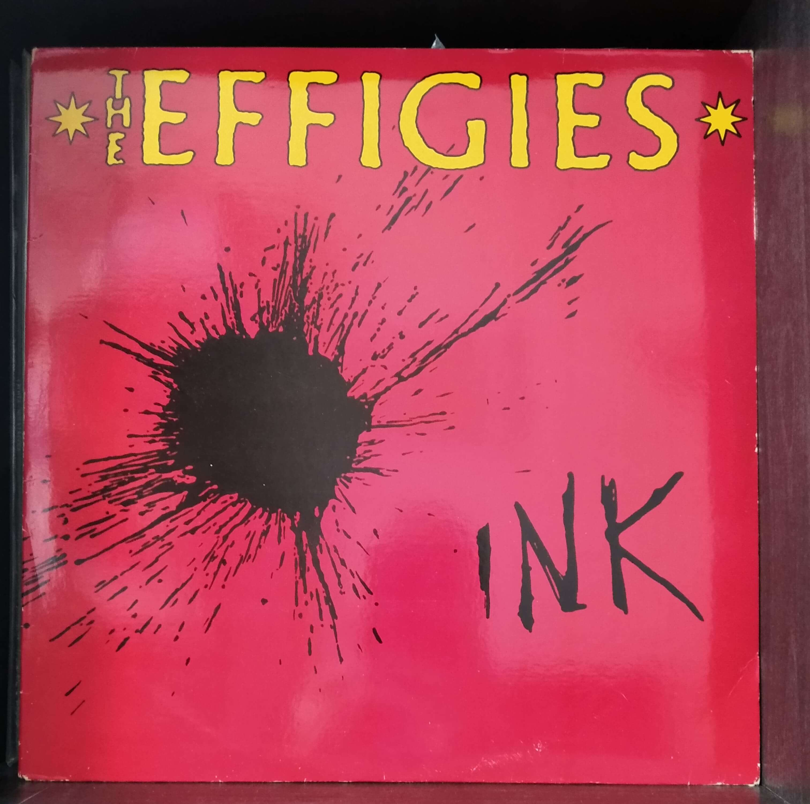
“Ink” LP (Restless Records, 1986)
Third album by this great punk band from Chicago formed in 1979.
More informationEFFIGIES
-

“Embrace” LP (Dischord Records, 1987)
Group formed by Ian MacKaye, after Minor Threat and before Fugazi, recorded between 1985 and 1986 during the "revolution summer" in Washington DC.
More informationEMBRACE
-

“Enuff Z ́Nuff” LP, (ATCO Records, 1989)
First album of this great band led by Donnie Vie and Chip Z ́Nuff, a perfect mix of hard rock and power pop.
More informationENUFF Z ́NUFF
-

“Restless Natives” LP, (Ready Go Records, 1982)
First album of this trio from Austin (TX) for several years they were the band of Accompaniment by Rocky Erickson.
More informationEXPLOSIVES
-

“Rigged” LP, (Revelation Records, 1994)
Second album of this great band from HC Melodico from California, in their ranks was Zach De La Rocha from Rage Against The Machine.
More informationFARSIDE
-
“The Record” LP, (Slash Records, 2007)
Reissue of the first FEAR album, an American punk classic released in 1982.
More informationFEAR
-

“Flyboys” Mini-Lp (Frontier Records, 1980)
First reference to the Frontier Records label, later they changed their name to Choir Invisible.
More informationFLYBOYS
-
“King Of Bands” Lp, (Roadrunner Records, 1991)
Compilation of this great Boston Hardcore band.
More informationGANG GREEN
-

“Magnum Cum Louder” LP, (RCA, 1989)
Fourth album by this Australian band, with members of The Victims, Fun Things and The Hitmen.
More informationHOODOO GURUS
-

“Zen Arcade” 2LP (SST, 1984)
Hüsker Dü's third album, where they lay the foundations for alternative rock.
More information
-

“Jeff McDonald” LP, (Bang Records, 2016)
Jeff McDonald's first solo album after Redd Kross split in 1997, and of which only about 10 or 15 copies were released on CD.
More informationJEFF McDONALD
-

“Last Scream Of The Missing Neighbors” Lp, (Alternative Tentacles, 1989)
Brutal collaboration between the leader of Dead Kennedys and DOA, great cover by Winston Smith.
More informationJELLO BIAFRA with DOA
-
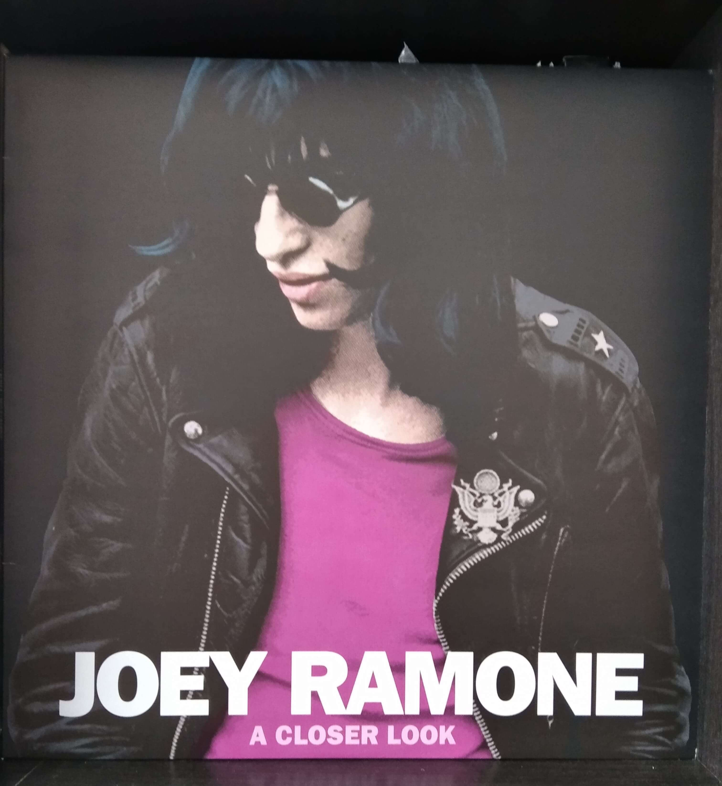
“A Closer Look” LP, (Deaf Youth Industries, 2020)
Compilation of hard-to-find songs from the great singer of The Ramones.
More informationJOEY RAMONE
-

“Ignition” LP, (Chrysalis, 1982)
First solo album after being in The Babys, an AOR classic.
More informationJOHN WAITE
-
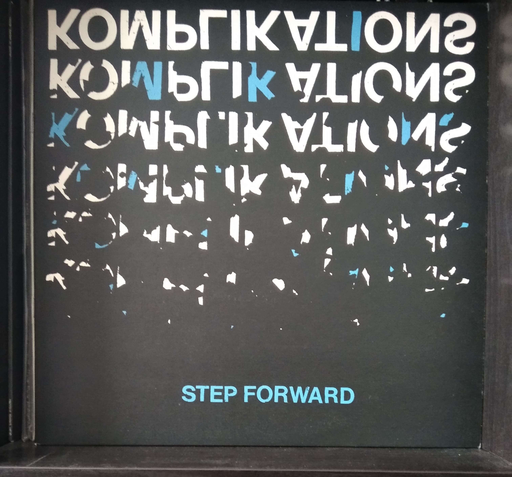
“Step Forward” Mini-Lp, (Rockstar Records, 2019)
Reissue of the first Mini-Lp of this great Synth-Punk trio from Belgium, edited originally in 2012.
More informationKOMPLIKATIONS
-

“Let ́s Go Wild” LP, (Wicked Cool Records, 2018)
Third album by the versatile Kurt Baker in his Spanish adventure. VERY COOL!
More informationKURT BAKER COMBO
-

“Smell The Magic” Mini-Lp, (Sup Pop Records, 1990)
Second reference of this great group of riot-girls, the first in Sub-Pop.
More informationL7
-
“L.A. Explosion”, LP (Bomp Records, 1979)
Wonderful first album by The Last, a masterpiece of Californian Power-Pop.
More informationLAST
-

“Complete Discography 1979-1982” LP, (Not On Label, 1996)
Compilation with everything recorded by this great punk band from Seattle.
More informationLEWD
-
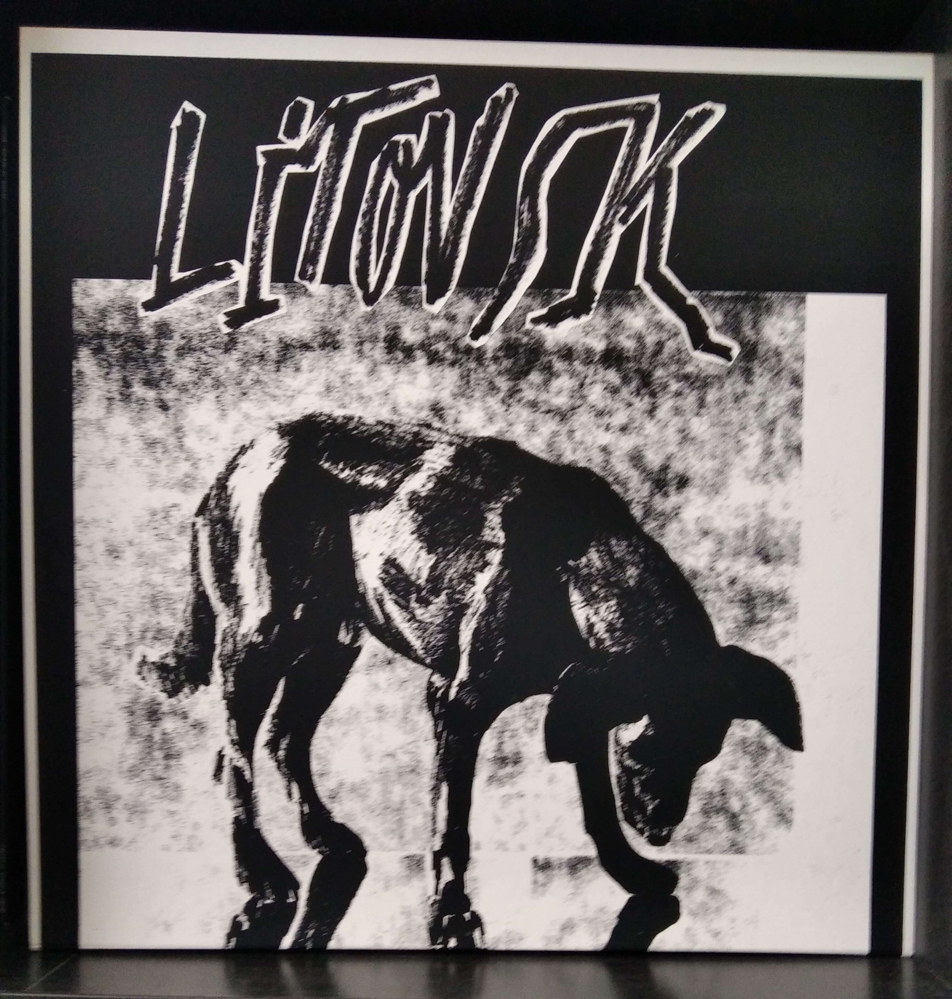
“Litovsk” LP, (Symphony Of Destruction Records, 2016)
First album of this French post-punk band with anarchist lyrics.
More informationLITOVSK
-

“Head First” LP, (Epitaph Records, 1989)
Only album of the group of Gore Verbinski, the director of Pirates of the Caribbean.
More informationLITTLE KINGS
-
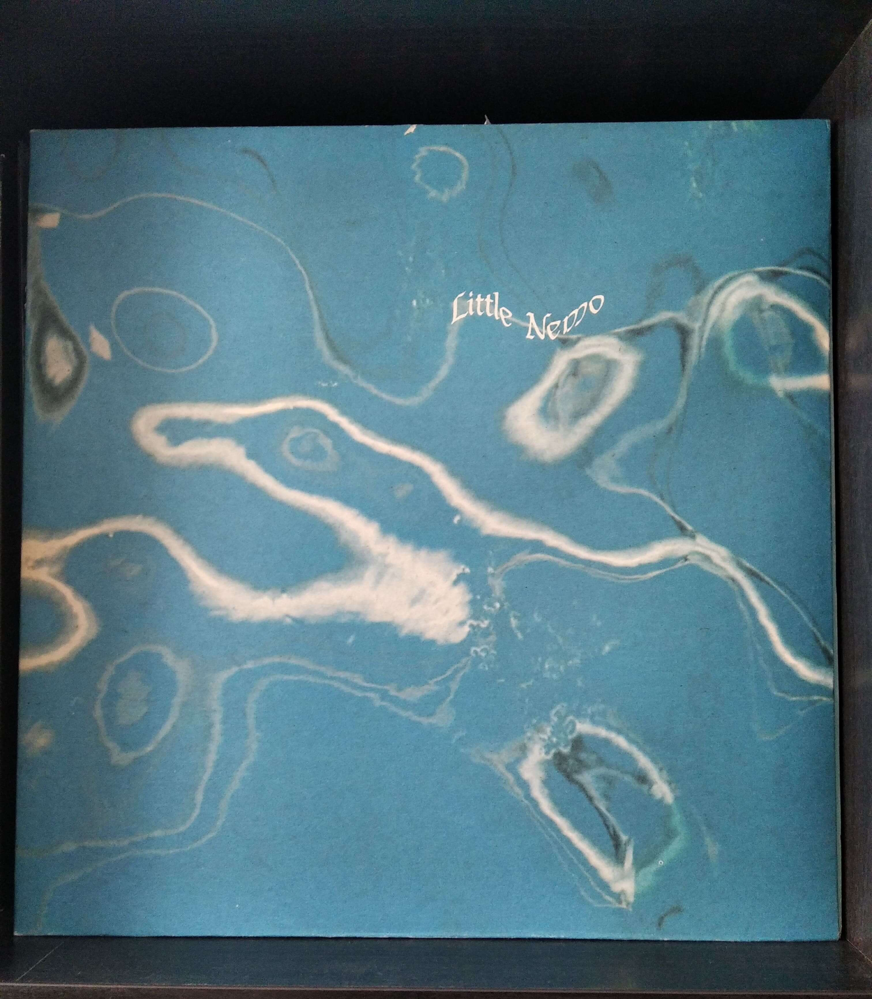
“Turquoise Fields” LP, (Lively Art, 1990)
Third album by this French post-punk group with influences from groups like The Chameleons or The Sound.
More informationLITTLE NEMO
-

“Cult Of Personality” 12”, (Epic, 1988)
Living Color's biggest hit where they mix hard-rock with funk.
More informationLIVING COLOUR
-
“Native Sons” LP, (Ariola, 1987)
Originally released in 1984, their first full album is one of the foundations of New Rock American.
More informationLONG RYDERS “Native
-
“Live At The Spit” LP, (Illegal Records, 1988)
Live album recorded on his first US tour in 1982
More informationLORDS OF THE NEW CHURCH
-

“Love One Another” LP, (Buy Our Records Europe, 1990)
Only album recorded by this group of girls created expressly for the movies Desperate Teenage Lovedolls and Lovedolls Superstar.
More informationLOVE DOLLS
-
“Real Life” LP, (Virgin Records, 1979)
First album of the band formed by Howard Devoto after leaving The Buzcocks.
More informationMAGAZINE
-

“...And You?” LP, (MCA Records, 1990)
The return of The Dictators, changing some components and speeding up their characteristic sound.
More informationMANITOBA WILD KINGDOM
-

“Back In The USA” Lp, (Rhino Records, 2018)
Vinyl edition included in the “Total Assault” boxset that includes its three Lps.
More informationMC5
-

“Are You Serious?” LP, (Taken By Surprise, 2016)
Reedición de su divertidísimo primer Lp, editado originalmente en 2009 en Dirtnap Records.
More informationMEAN JEANS
-
“Who Cares Wins” LP, (Decoy Records, 1990)
Second album of Mega City Four, essential.
More informationMC4
-
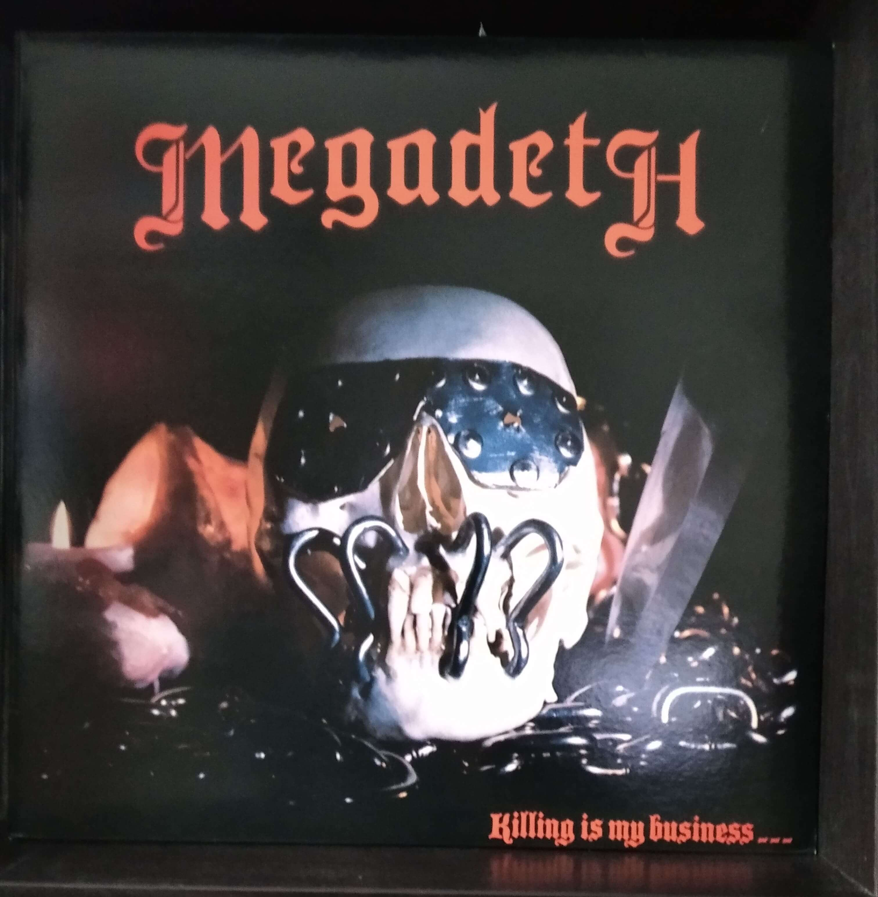
“Killing Is My Business...And Business Is Good” LP, (Roadrunner, 2018)
Reissue of the first album by Megadeth, a group formed by Dave Mustaine after his expulsion from Metallica. Originally released in 1985.
More informationMEGADETH
-

“Teen City” Mini-LP “Sudden Death Records, 2014)
Reissue of this wonderful mini-lp, originally released in 1980.
More informationMODERNETTES
-

“I ́m A Doctor...Not An Escalator” LP, (In Your Face Records, 1991)
Único disco de esta banda de Hardcore melódico inglesa.
More informationMONK OF SCIENCE
-

“ The Best Of Times” LP, (Relativity, 1991)
Second album of this band from NYHC, where they kept practicing Hardcore expanding the registration to other styles such as funk rock and Ska.
More informationMURPHYS LAW
-
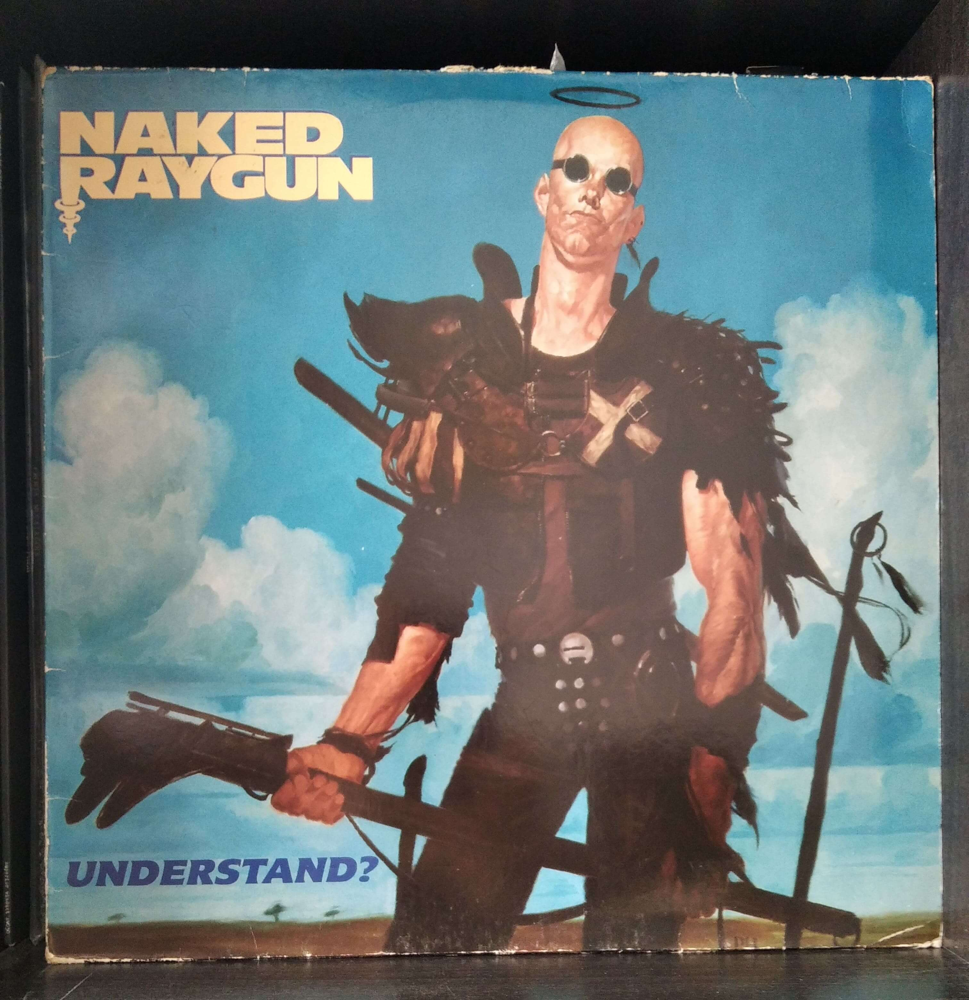
“Understand?” LP, (Caroline Records, 1989)
Fourth album by this punk band from Chicago, essential.
More informationNAKED RAYGUN
-

“Scum” Lp, (Earache Records, 1987)
First album of this English band creators of grind-core.
More informationNAPALM DEATH
-
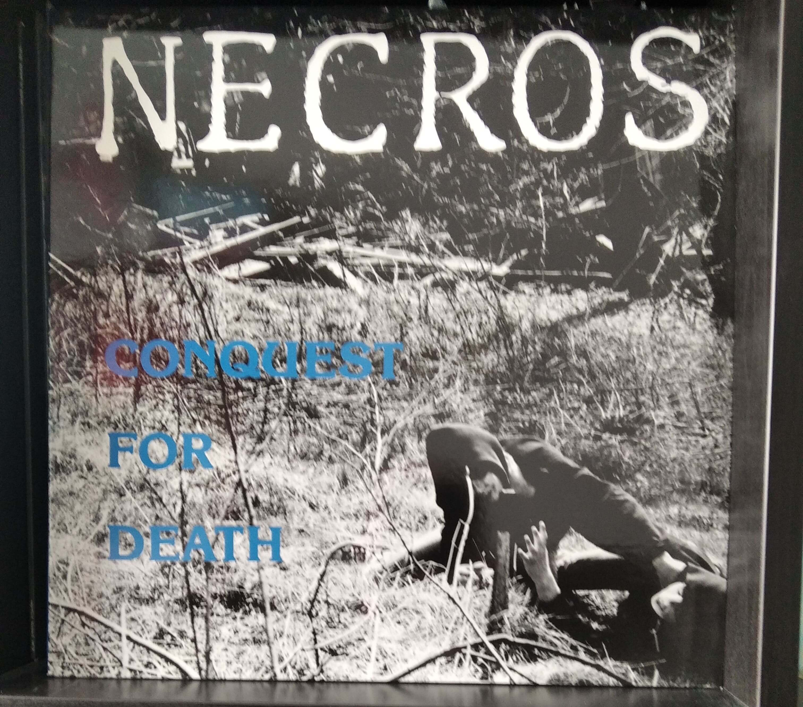
“Conquest For Death” LP, (Touch & Go Records, 2021)
Unofficial reissue of this Detroit HC classic originally released in 1983.
More informationNECROS
-
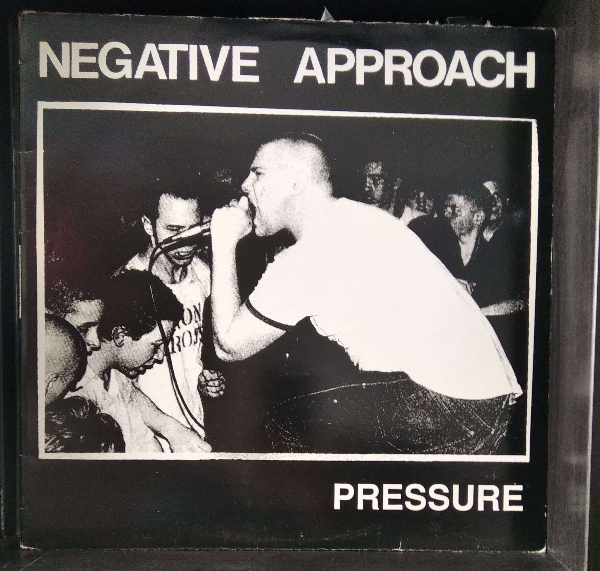
“Pressure” LP, (Recollect Records, 2012)
Unofficial disc that includes his album “Tied Down” on one side and songs recorded live in 1983 in the other.
More informationNEGATIVE APPOCACH
-

“Nervus Rex” LP, (Dreamland Records Inc., 1980)
The only album by this obscure New Wave and Power Pop band from NY, part of the drummers of this album was recorded by Miriam Linna, co-founder of Norton Records with her husband, Billly Miller.
More informationNERVUS REX
-
“They Walk Among You” Mini-LP, (415 Records, 1981)
First Mini-Lp of this dark band from Rochester (NY), later they would change the name Jet Black Berries.
More informationNEW MATH
-

“New York Dolls” 2LP, (Mercury, 1977)
Reissue of the first album by this great band, originally released in 1983.
More informationNEW YORK DOLLS
-

“Nuns” LP, (Get Back, 2003)
Reissue of the first album by this great Punk and New Wave band. originally edited in 1980)
More informationNUNS
-
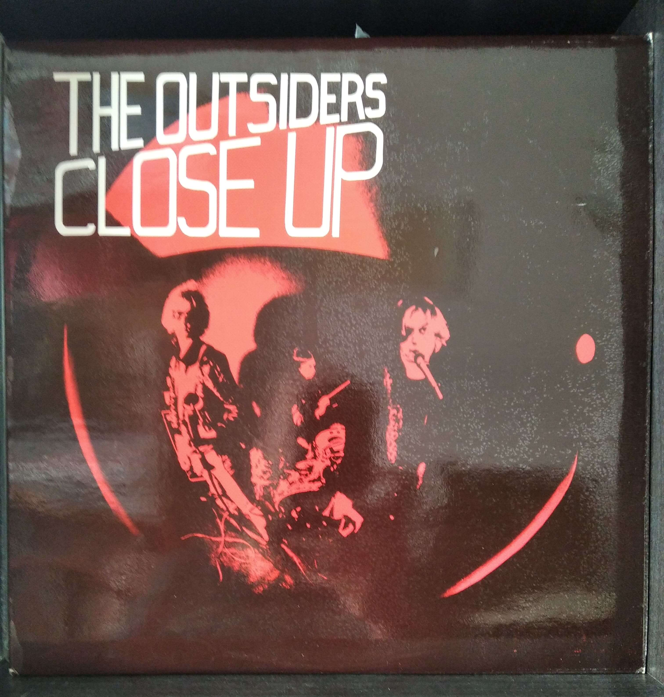
“Close Up” LP (Raw Edge Records, 1978)
Second album by the group of Adrian Borland and Graham Bailey before forming The Sound.
More informationOUTSIDERS
-
“Shit Street” LP, (Crypt Records, 2001)
Compilation of studio songs recorded between 1977 and 1979 and songs recorded in direct in 1979.
More informationPAGANS
-

“Horses” LP, (EMI, 1980)
Spanish reissue of the first album of the “poetísa del punk”.
More informationPATTI SMITH
-

“Storng Reaction” LP, (Quartestick Records, 1991)
First album of this powerful Punk band from Chicago with members of Naked Raygun and Bophal Stiffs. ESSENTIAL.
More informationPEGBOY
-
“Bubblegum” 12”, (Vinyl Solution, 1987)
First maxi for the Ipswich Replacements. Tremendous.
More informationPERFECT DAZE
-
“Creatures For Awhile” LP, (War On Music, 2003)
Reissue of the only album by this great punk band from Winnipeg (Canada) released originally in 1983.
More informationPERSONALITY CRISIS
-

“No Hope For The Wretched” LP, (Radiation Reissues, 1980)
First album of the group led by Wendy-O-Williams, originally released in 1980.
More informationPLASMATICS
-
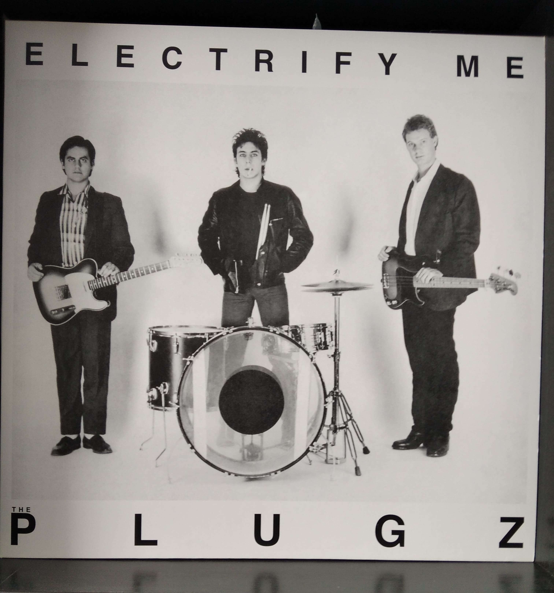
“Electrify Me” Lp, (Not On Label, 2021)
Unofficial reissue of the first album by Tito Larriva's band, originally released in 1979.
More informationPLUGZ
-

“Johnson” LP, (Full Blast Records, 1988)
Fourth album of the band led by Ward Dotson of The Gun Club.
More informationPONTIAC BROTHERS
-

“Noise Addiction” LP, (Beat Generation, 2016)
Reissue of the first album by the first Afro-American punk band, recorded in 1978 and first published in 2006.
More informationPURE HELL
-
“Born Innocent” LP, (Smoke Seven, 1982)
First album of the group of brothers Jeff and Steven McDonald, shortly after they had to change the name to avoid a lawsuit from the Red Cross, ESSENTIAL.
More informationRED CROSS
-
“Bodycount At Tyrone's” LP, (Brigand, 1990)
Unofficial live album recorded in Athens (GA) on October 8, 1980, most of these songs were never recorded in the studio.
More informationREM
-

“ The Lost Album” LP, (Radiation Reissues, 2017)
Reissue of Rik L Rik's lost album, recorded in 1980 and first released in 1991.
More informationRIK L RIK
-
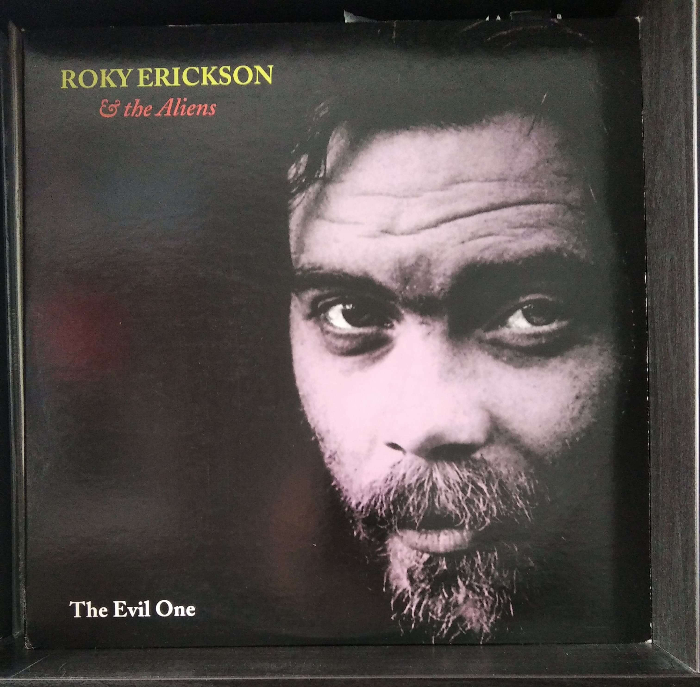
“The Evil One” 2LP, (Sympathy For The Record Industry, 2002)
Roky Erickson's first album with The Aliens, recorded in 1980, after spending 5 years confined in a psychiatric hospital. Essential.
More informationROKY ERICKSON & THE ALIENS
-

“The End Of Silence” 2LP, (Imago, 1992)
Fifth studio album by Henry Rollins' band, spectacular.
More informationROLLINS BAND
-
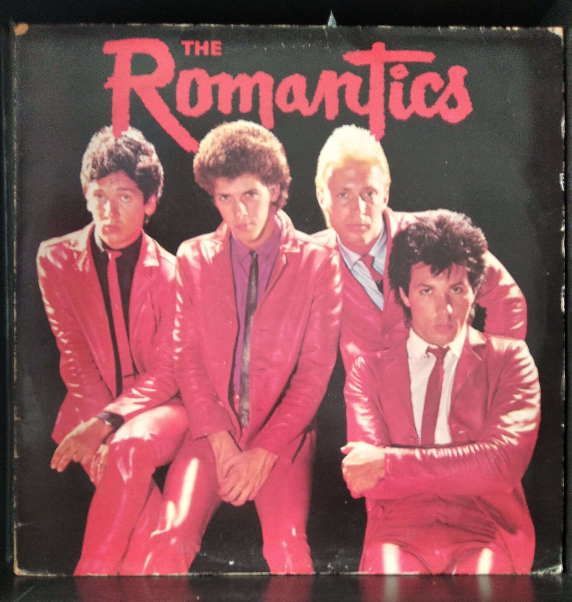
“Romantics” LP, (EMI, 1980)
First album by this great power-pop and new wave band, known above all for “What I Like About You”.
More informationROMANTICS
-

“Surf Nicaragua” Mini-LP, (Metal Blade, 2021)
Reissue of the classic mini-lp originally released in 1988
More informationSACRED REICH
-
“Wrapped Up In This Society” LP, (Be Yourself Records, 1990)
First album of this classic Hardcore Punk band from Belgium.
More informationSCRAPS
-

“This Side Up” LP, (Dischord Records, 1985)
Second album of the great Hardcore band led by the Stahl brothers.
More informationSCREAM
-

“Demos 1977-1978” LP, (Sob, 2013)
Unofficial compilation of demos recorded between 1977 and 1978.
More informationSCREAMERS
-
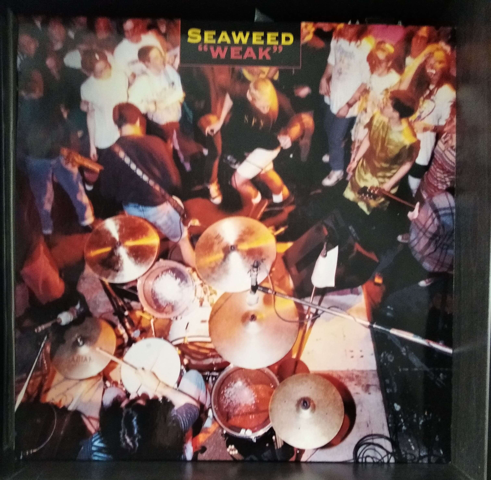
SEAWEED
-

“ Psych Out” LP, (Cherry Red, 1990)
First album of the band from Bristol in the vein of New Model Army.
More informationSEERS
-
“Omnipotent” LP, (What Goes On Records, 1987)
First album by this Australian garage punk band.
More informationSEMINAL RATS
-
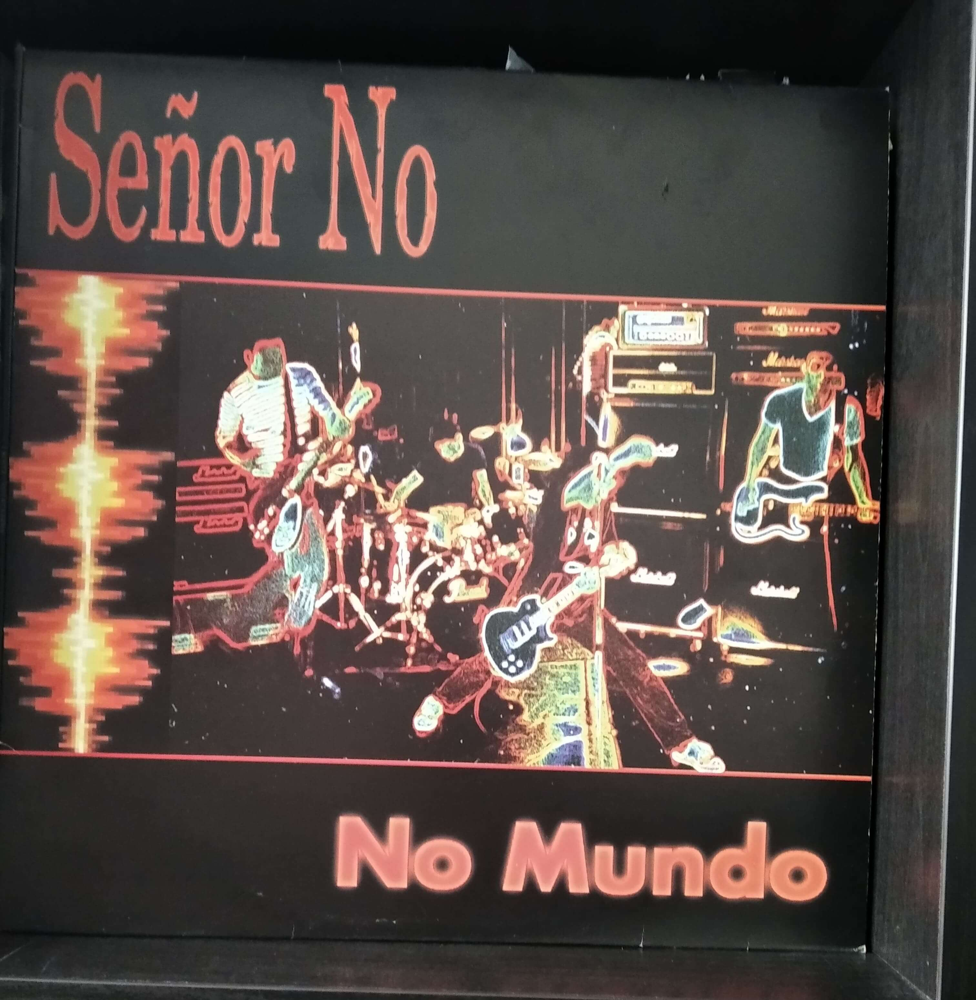
“No Mundo” LP, (No Tomorrow Records, 1996)
Second album of the great punk rock band from Buenavista (Basque Country)
More informationSEÑOR NO
-
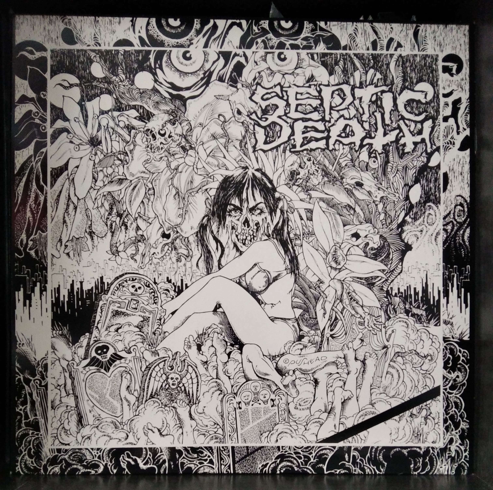
“Now That I Have The Attention What Do I Do With It?” LP, (Harto De Todo, 2017)
Unofficial reissue of the first album of the Hardcore-Thrash band led by Pushead, originally published in 1986.
More informationSEPTIC DEATH
-

“ Refuse/Resist” 12”, (Roadrunner Records, 1994)
Maxisingle of 3 songs, one of them not included in his album Chaos A.D.
More informationSEPULTURA
-

“I Love America, 1979-1981 Recordings” LP, (Radiation Reissues, 2020)
Compilation that includes their first single “I Love America/Reagan Country” from 1981 and its demo from 1979.
More informationSHATTWRWD FAITH